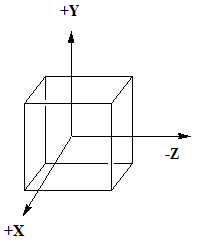

Our next task is to build a Skybox sometimes refered to as an evironment map or a cub map.
The idea is that a cube could be created where all six faces had a texture assigned to it.
The camera, or eye, is still at the origin looking down the negative z-axis, if the cube is a 1x1x1, centered at the origin,

Wait! A better plan is to look at this web page skybox
In order to see if you have build the sky box correctly, you will need to contol the camera by keyboard or mouse. I suggeast using the mouse.
You can get the rotation matrix out of the trackball with getMatrix4(). You should use it as the cameraRotationMatrix instead of the Camera's viewMatrix.
Your Scene should look something like this, the jet is optional